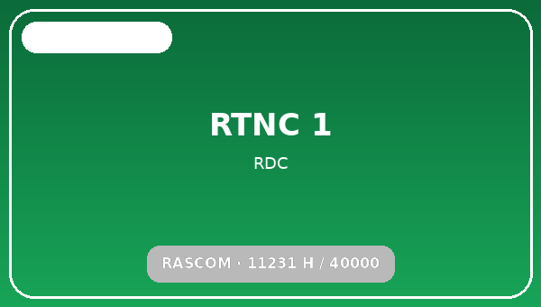
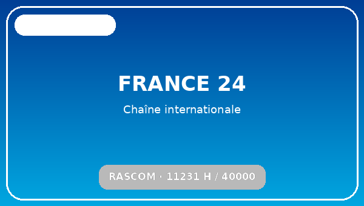
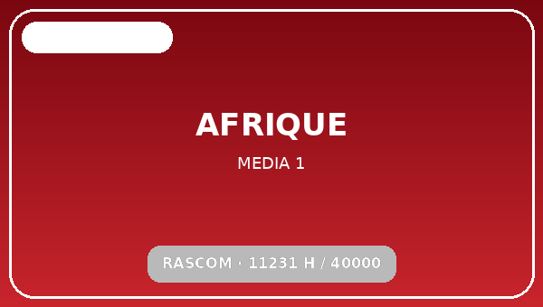
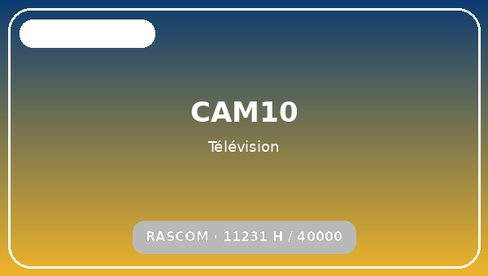
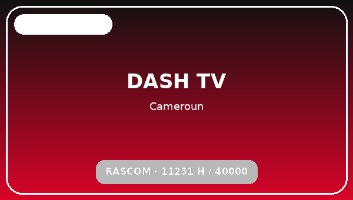
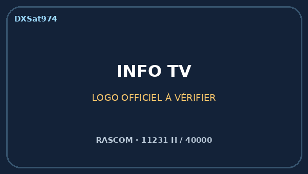
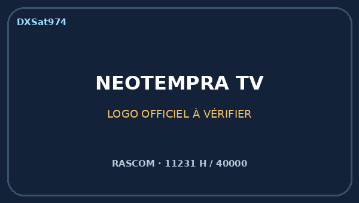
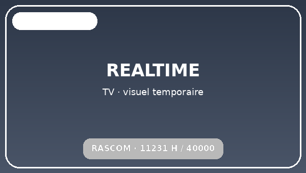

Réglage rapide — réception terrain
Position
2,9°E
Faisceau
Ku South
Paramètre reçu à La Réunion
11231 H / 40000
Référence publique récente
11230 V / 40000 — DVB-S2 QPSK — FEC 3/4
Parabole de réception
Offset 85 cm
Mesure Octagon
SNR 35 % / AGC 79 %
Important : DXSat 974 conserve la polarisation H telle qu'affichée par l'Octagon lors du relevé terrain. Les listes publiques récentes donnent le multiplex Ku South en V. Le montage/skew du LNB peut inverser la correspondance pratique H/V.
Relevé terrain — La Réunion, 17/09/2026
Réception réalisée avec une parabole offset de 85 cm. Sur l'Octagon SF8008 Supreme, le transpondeur est détecté en blind scan, mais les services n'apparaissent ni en blind scan ni en scan automatique. Une recherche manuelle sur 11231 H / 40000 trouve 26 services, avec SNR 35 % / AGC 79 %. Les derniers essais avec le récepteur V5 confirment également la réception du bouquet.
- RLPRO
- FACE_TV
- TIMES TV
- SHALOM TELEVISION
- DBTV
- RTNC 1
- RTNC 3
- TVS1
- FRANCE24
- AFRIQUEMEDIA1
- INFO TV
- CAM10_TELEVISION
- DASH TV
- POWER_TV
- NTV
- Bnews
- PRO-TV
- PSTV
- RealTime
- CUTV
- KALEMIE FRYCOMS TV
- SUDFMTV
- RESURRECTION_TV
- ACTUALITE_EN_CONT
- ELAN-TV
- LIFEHD-TV
Services détectés/verrouillés mais sans image au moment du relevé : RLPRO, Shalom Television, RTNC 3, PRO-TV, CUTV, SudFM TV, Resurrection TV, Elan TV et LiveHD TV. Ils ne sont pas classés comme définitivement hors service : le statut correspond uniquement au moment du test.
Particularité Octagon : la porteuse 11231 / 40000 est bien détectée en blind scan, mais la liste des chaînes n'est obtenue qu'en recherche manuelle. Le V5 permet également de confirmer la présence du bouquet.
Chaînes mises en avant — galerie logo v29
Première intégration visuelle pour la page RASCOM. Les chaînes ci-dessous disposent désormais d’un visuel/logo dans le site. Pour RealTime TV, un logo temporaire propre est utilisé en attendant une vérification plus poussée d’un visuel officiel.







Organisation retenue pour DXSat974 : une première galerie de chaînes mises en avant avec visuels, puis la liste complète des services trouvés sur le transpondeur. Cette structure permet d’ajouter progressivement d’autres logos sans perdre la vision globale du multiplex.
Ce que disent les sources publiques
RascomStar confirme une position orbitale à 2,9°E, avec bandes C et deux faisceaux Ku North et South. Les listes publiques récentes donnent le multiplex Ku South autour de 11230 V / 40000 et recensent notamment RTNC, RTNC 3, RTVS 1, France 24 Français, Afrique Média, Face TV et RealTime TV. Le relevé terrain DXSat 974 montre actuellement davantage de services que ces listes publiques.
Autre multiplex Ku à tester
11430 H / 18330 — DVB-S2 8PSK 3/4 — faisceau Ku North. Des services FTA y sont référencés publiquement, mais ce faisceau est probablement beaucoup moins favorable depuis La Réunion.
Dernière mise à jour
23 septembre 2026